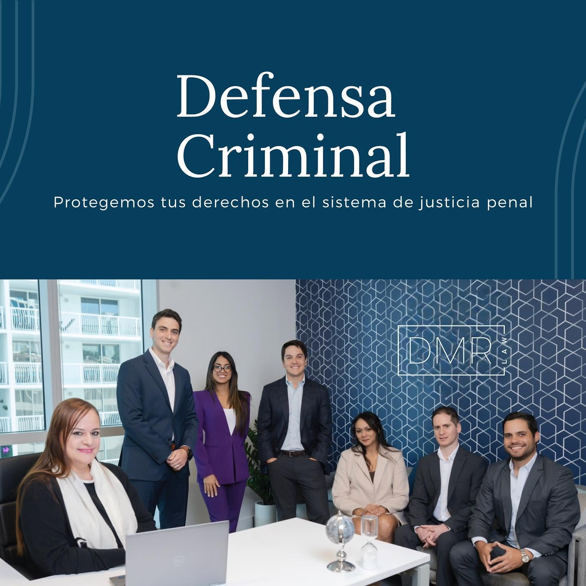

San Juan Narcotics Charging Attorney
A serious accusation can affect employment, travel, finances, and family relationships long before the underlying dispute is resolved. Speaking with Drug Trafficking Defense Lawyer in San Juan may help a person set practical priorities, protect confidential communications, and avoid discussing sensitive facts through informal channels. Advice from Drug Trafficking Defense Lawyer in San Juan can also support a measured plan for preserving relevant messages and documents without altering or deleting material that may later matter.
An effective review should consider not only what appears persuasive, but also whether records are complete, accurately identified, and presented in proper context. Drug Trafficking Defense Lawyer in San Juan can coordinate a disciplined examination of technical reports, transaction history, digital information, and witness accounts, obtaining assistance from qualified specialists when necessary. Working with Drug Trafficking Defense Lawyer in San Juan may help a client understand questions of authenticity, reliability, and interpretation before choosing a response.
Because every matter carries different personal and legal consequences, no single strategy suits everyone. Drug Trafficking Defense Lawyer in San Juan can explain the practical differences between challenging the allegations, pursuing a negotiated resolution, and preparing for a contested proceeding while keeping the client's goals and informed consent at the center of the discussion. Ongoing communication helps ensure that decisions rest on verified information, thoughtful risk assessment, and a clear understanding of what comes next.

Dedicated Lawyer For Trafficking Charges
When a controlled-substance matter enters the legal system, Drug Trafficking Defense Lawyer in San Juan can assess the procedural posture, explain applicable rights, and identify practical next steps. A focused consultation may address the charging instrument, jurisdiction, discovery rights, and communication boundaries, helping a client understand which decisions require careful consideration. By working with Drug Trafficking Defense Lawyer in San Juan, a person can establish an organized approach to the case while preserving the ability to respond thoughtfully as new information becomes available.
Case preparation should include a disciplined review of how the government's position is supported and how alternative interpretations may be presented. Drug Trafficking Defense Lawyer in San Juan can analyze witness accounts, documentary material, digital records, and expert findings in light of applicable rules, then identify questions for further inquiry. Consultation with Drug Trafficking Defense Lawyer in San Juan may also assist with evaluating negotiation proposals, preparing court submissions, and determining whether additional professional resources are appropriate.
Effective representation continues through clear communication and deliberate preparation. Drug Trafficking Defense Lawyer in San Juan can explain possible procedural paths, outline the strengths and limitations of available arguments, and help a client prepare for hearings or discussions with opposing counsel. No legal strategy can promise a particular result, but informed planning can promote consistency, protect important interests, and keep decisions aligned with the governing law.
Local Lawyer Challenging Drug Prosecutions
In a contested controlled-substance case, the strength of the prosecution's theory may depend on details that are easy to overlook, including the authority behind a search, the continuity of seized materials, and the reliability of expert conclusions. Drug Trafficking Defense Lawyer in San Juan can assess whether those details withstand scrutiny and whether relevant objections should be raised through motions or at a hearing. A separate review by Drug Trafficking Defense Lawyer in San Juan may also consider inconsistencies among reports, testimony, and physical exhibits before any major litigation decision is made.
Defense planning should account for court procedures, available records, and the consequences of each response. Drug Trafficking Defense Lawyer in San Juan may work with investigators and qualified experts to test identification evidence, evaluate laboratory methods, and locate information that supports a competing interpretation. When negotiations are considered, Drug Trafficking Defense Lawyer in San Juan can compare proposed terms with the evidence, potential sentencing exposure, and the lasting effects of an outcome. Careful coordination is especially important when several agencies or defendants are involved, since an informal statement may be misunderstood or taken out of context.
The objective is not to promise a particular result, but to build a reasoned response grounded in the record. Drug Trafficking Defense Lawyer in San Juan can help organize the defense around verifiable facts, preserve objections, and present the client's position with precision as the matter moves through the courts. Timely legal advice gives decision-makers a clearer basis for evaluating risk, protecting individual rights, and choosing a strategy suited to the circumstances.
DMR Law
DMR Law
Capital Center Building, Torre Sur Suite 1101 San Juan, PR 00918
(787) 331-9970